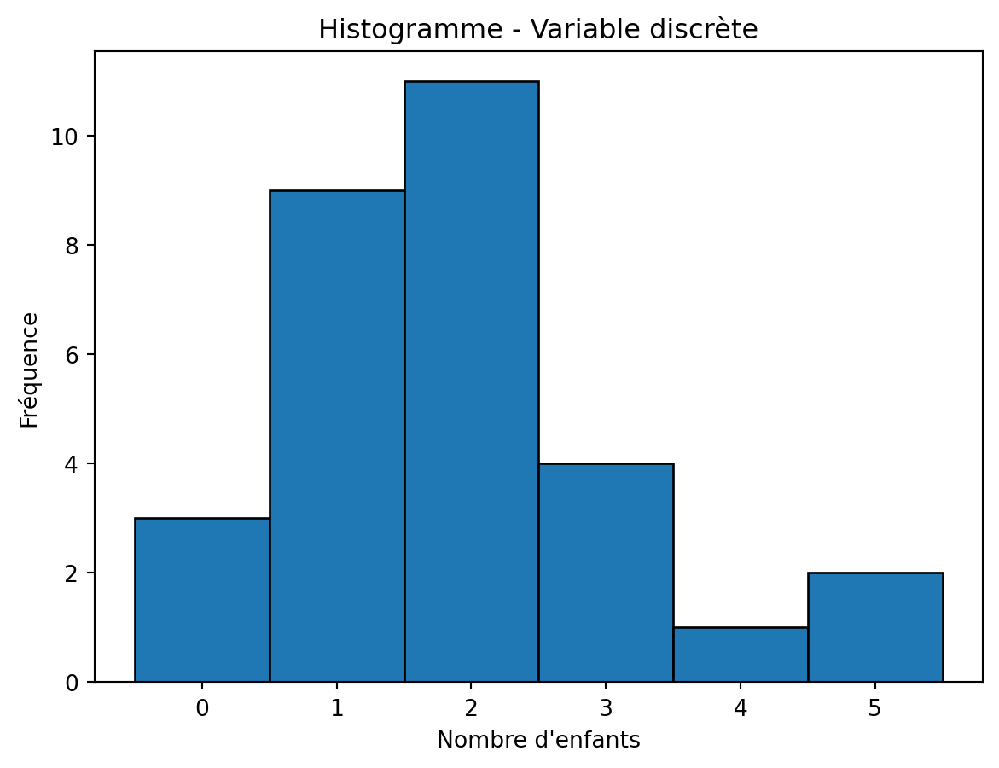
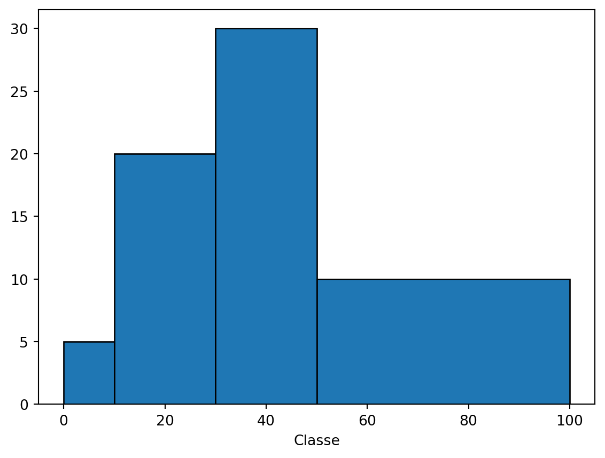
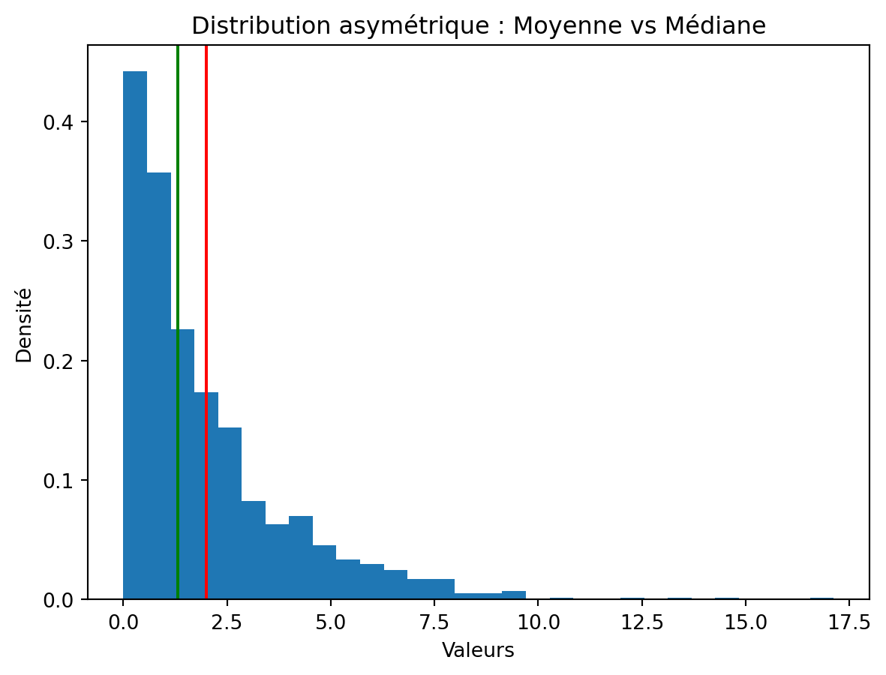

flowchart TB
Variable --> Qualitative
Variable --> Quantitative
Qualitative --> Nominale
Qualitative --> Ordinale
Quantitative --> Discrète
Quantitative --> Continue
Statistiques descriptives
Une entreprise mesure le temps de production (en minutes) de 30 pièces usinées. Le responsable veut savoir si le processus est stable.
- Que doit-on calculer ?
- Une moyenne suffit-elle ?
Objectifs pédagogiques de la séance
- Distinguer population / échantillon
- Construire un tableau statistique
- Calculer moyenne, médiane, variance, écart-type
- Interpréter ces indicateurs
- Utiliser Python pour vérifier et visualiser
- Comprendre les limites de la moyenne
Introduction
L’objet de la statistique descriptive est de décrire une ou plusieurs caractéristiques des individus d’une population et de les structurer.
On peut distinguer deux types de données :
- les données, ou séries, temporelles sont celles qu’on oberserve à travers le temps! Par exemple, l’évolution du PIB, les variations de change d’une devises, etc.
- les données instantanées sont les données issu
Vocabulaire
la population, \(P\) est un ensemble d’éléments partageant une ou plusieurs caractéristiques qui permettent de les regrouper, comme un lot d’ampoules d’une ligne de production ou les étudiants issus de la même promotion.
Les individus, ou unités statistiques, sont les éléments de \(P\).
On appelle caractère ou variables toute application de la population \(P\) dans un ensemble \(E\) de valeurs appelées modalités. Le couple, Population et variables, s’appelle une série statistique.
Tip
Les modalités sont rangées par ordre croissant. Sauf pour les variables qualitatives nominale (pas d’ordre pour les modalités).
Variables
On appelle variable une caractéristique commune à l’ensemble des individus d’une étude. La valeur de cette caractéristique varie entre les individus. C’est pour cela que nous parlons de variables. Il existe quatre types de variables.
Variables qualitatives
En statistique, une variable qualitative, est un type de variable qui mesure une qualité d’un individu statistique. Les modalités ne sont donc pas des nombres.
Nominales : Une variable nominale, dit aussi catégorielle, permet de classer les individus dans des catégories qualitatives, le plus souvent mutuellement exclusive (un individu est classé dans une seule catégorie). Exemple : le diplôme, la couleur des yeux, etc.
Ordinales : Une variable ordinale permet d’ordonner les individus statistique les uns par rapport aux autres. Notons qu’une variable ordinale possède des propriétés d’une variable nominale et qu’on attribue souvent des valeurs numériques (\(1\), \(2\), \(3\), …).
Important
Les variables qualitatives ne permettent pas On se concentrera donc sur l’étude des variables quantitatives.
Exercice
Les données suivantes représentent le genre de 24 candidats à un concours :
H,F,F,H,H,F,H,H,F,F,H,H,F,F,H,F,H,H,F,H,F,F,F,F.
| Genre | \(n_i\) nombre de candidats | Fréquence |
|---|---|---|
H |
||
F |
||
| Total | \(24\) | \(1\) |
Variables quantitative
Les modalités des variables quantitatives sont des nombres.
Discrètes : l’ensemble \(E\) des modalités est discontinu (fini ou dénombrable). Par exemple : âge, nombre d’enfants par famille, etc.
Continues : L’ensemble \(E\) des modalités est un intervalle. Comme par exemple, la taille, le poids, etc.
Synthèse par tableau
En statistique, un tableau est une méthode permettant de visualiser des données. Il peut être aussi bien utilisé pour représenter des données brutes que des résultats statistiques.
On considère que \(E = {x_1, x_2, …, x_i}\) est l’ensemble fini des modalités rangé dans l’ordre croissant, \(x_1 < x_2 < … < x_r\).
On note \(n = card(P)\) l’effectif totale de la population \((P)\) et pour chaque modalités :
- Effectif \(n_i\) : c’est le nombre de fois qu’une valeur apparaît dans une série.
- Effectif cumulé croissant \(n_i^+\) : c’est la somme de l’effectif d’une donnée et des effectifs des données qui la précèdent.
\[ n_i^+ = n_1 + \ldots + n_i \]
- Effectif cumulé décroissant \(n_i^-\) : c’est la somme des effectifs de toute les modalités dont la valeur est supérieure à celle de \(m_i\).
\[ n_i^- = n_i + \ldots + n_k \]
- Fréquence : c’est la part qu’une valeur représente dans le total.
\[ f_i = \frac{n_i}{n} \]
- Fréquence cumulée croissante \(f_i^+\) : à l’image des effectifs cumulés, c’est la somme des fréquences inférieures.
\[ f_i^+ = \frac{n_i^+}{n} = f_1 + \ldots + f_i \]
- Fréquence cumulée décroissante \(f_i^-\) : c’est la somme des fréquences dont la valeur de la modalitié est supérieure à celle de \(m_i\).
\[ f_i^- = \frac{n_i^-}{n} = f_i + \ldots + f_k \]
Exercice
Warning
Déterminer \(n_i\), \(n_i^+\), \(n_i^-\), \(f_i\), \(f_i^+\) et \(f_i^-\).
Lors de l’étude de la population d’un village on obtient la distribution suivante du nombre d’enfants par ménage :

| Nombre d’enfants | \(0\) | \(1\) | \(2\) | \(3\) | \(4\) | \(5\) | Total |
|---|---|---|---|---|---|---|---|
| Effectif \(n_i\) | |||||||
| Effectif cumulé croissant \(n_i^+\) | |||||||
| Effectif cumulé décroissant \(n_i^-\) | |||||||
| Fréquence \(f_i\) en \(%\) | |||||||
| Fréquence cumulée croissante \(f_i^+\) | |||||||
| Fréquence cumulée décroissante \(f_i^-\) |
Tip
Pour les variables qualitatives nominales, le calcul de \(n_i^+\), \(f_i^+\), \(n_i^-\) et \(f_i^-\) n’a pas de sens… même si c’est faisable d’un point de vue calculatoire.
Cas d’une variable quantitative
La synthèse par tableau des données (observées à l’état brut) d’une variable continue révèle le nombre des modalités est presque égal à l’effectif total, i.e. \(k \approx n\), car les observations sont presque toutes distinctes. A ce stade, la synthèse par tableau n’apporte aucune valeur ajoutée.
Lorsqu’il y a un grand nombre de de données, on les regroupe en classes, c’est-à-dire que l’on agrège les données en intervalle \([a_i; a_{i+1}[\) avec \(i = 1, …, r\) et \(a < a_2 < … < a_r+1\).
On définit pour chaque classe \([a_i; a_{i+1}[\) :
Amplitude : c’est l’intervalle de chaque classe.
\[ \alpha_i = a_{i+1} - a_i \]
Centre :
\[ c_i = a_i + \frac{\alpha_i}{2} \]
Densité : le nombre d’observations par unité d’intervalle. On définit la densité de la classe \(i\) par :
\[ d_i = \frac{n_i}{\alpha_i} \]
Ou en version fréquentielle :
\[ d_i = \frac{f_i}{\alpha_i} \]
Où :
- \(n_i =\) effectif de la classe
- \(f_i =\) fréquence de la classe
- \(\alpha_i =\) amplitude de la classe
Problème
Lorsque les classes ont des amplitudes différentes, la représentation graphique peut devenir trompeuse si l’on trace simplement des barres dont la hauteur est proportionnelle à l’effectif ou à la fréquence. Une classe large peut paraître importante, graphiquement, simplement parce qu’elle est large.
- Ce n’est pas la hauteur qui représente l’effectif;
- C’est la surface de la barre.
Pour trouver la surface d’une barre \(Surface_i = hauteur \times \alpha_i\) :
On choisit comme hauteur : \(hauteur_i = d_i\)
Alors :
\[ Surface_i = d_i \times \alpha_i = \frac{n_i}{\alpha_i} \times \alpha_i = n_i \]
Donc la surface est bien proportionnelle à l’effectif.
Les fréquences corrigées : la hauteurs des barres est proportionnelles à la densité.
\[ f’_i = \frac{f_i}{k_i} \]
Où \(k\) est un coefficient de proportionnalité graphique (choisi pour adapter l’échelle du dessin) et la surface reste proportionnelle à l’effectif.
Exemple :
| Classes | \([; 10[\) | \([10; 30[\) | \([30; 50[\) | \([50; 100[\) |
|---|---|---|---|---|
| Effectifs | \(5\) | \(20\) | \(30\) | \(10\) |


Exercice
Distribution d’une population par classe d’âge :
| \(x\) | \([30; 40[\) | \([40; 45[\) | \([45; 50[\) | \([50; 65[\) | Total |
|---|---|---|---|---|---|
| Eeffectif \(n_i\) | \(11\) | \(7\) | \(5\) | \(2\) | \(25\) |
| Fréquences \(f_i\) | |||||
| Amplitude \(\alpha_i\) | |||||
| Coef. correcteur \(k_i\) | |||||
| Fréq. corrigées \(f′_i = \frac{f_i}{k_i}\) | |||||
| Densités \(d_i = \frac{f_i}{\alpha_i}\) |
Fonction de répartition
Lors de l’agrégation des données en classes, une partie de l’information est perdue concernant la répartition des observations à l’intérieur de chaque classe.
On fait alors l’hypothèse d’équirépartition au sein de chaque intervalle \([a_i ; a_{i+1}[\) :
La variable \(X\) suit une loi uniforme sur chaque classe \([a_i ; a_{i+1}[\).
Propriétés de la fonction de répartition \(F\)
La fonction de répartition associée satisfait les conditions suivantes :
Elle est croissante,
continue,
affine par morceaux (linéaire sur chaque classe),
Pour chaque borne \(a_i\) :
\[ F(a_i) = F_i \]
où \(F_i\) est la fréquence cumulée en \(a_i\),
Elle commence à 0 % et se termine à 100 %.
Interpolation linéaire
Si \(x \in [a_i ; a_{i+1}[\), on détermine \(f(x)\) par interpolation linéaire.
On utilise l’égalité des coefficients directeurs :
\[ \frac{f(x) - f(a_i)}{x - a_i} = \frac{f(a_{i+1}) - f(a_i)}{a_{i+1} - a_i} \]
Ce qui revient à écrire :
\[ f(x) = f(a_i) + \frac{x - a_i}{a_{i+1} - a_i} \left( f(a_{i+1}) - f(a_i) \right) \]
Exemple
| Classe | [30;40[ | [40;45[ | [45;50[ | [50;65[ | Total |
|---|---|---|---|---|---|
| Effectif \(n_i\) | 11 | 7 | 5 | 2 | 25 |
| Borne | 30 | 40 | 45 | 50 | 65 |
| \(f_i\) (%) | 0 | 44 | 72 | 92 | 100 |
- Calcul de \(f(45)\) Comme 45 est une borne de classe : \(f(45) = 72%\)
- Calcul de \(f(42)\) On a :
\[ 42 \in [40 ; 45[ \]
Donc on interpole entre :
- \(f(40) = 44\%\)
- \(f(45) = 72\%\)
Amplitude de la classe :
\[ 45 - 40 = 5 \]
Distance de 42 à 40 :
\[ 42 - 40 = 2 \]
Donc :
\[ f(42) = 44 + \frac{2}{5} \times (72 - 44) \]
\[ f(42) = 44 + \frac{2}{5} \times 28 = 44 + 11.2 = 55.2\% \]

Paramètres de position
Moyenne
La moyenne est un paramètre de position (ou de tendance centrale) d’une distribution. C’est le centre de gravité, le point d’équilibre de la distribution.
Variable discrète
Si les modalités sont \(x_i\) d’effectifs \(n_i\), la moyenne arithmétique pondérée est :
\[ \bar{x} = \frac{1}{N} \sum_{i=1}^{r} n_i x_i \]
où :
- \(N = \sum_{i=1}^{r} n_i\) est l’effectif total,
- \(f_i = \frac{n_i}{N}\) est la fréquence.
On peut aussi écrire :
\[ \bar{x} = \sum_{i=1}^{r} f_i x_i \]
Propriétés
- Cas constant
Si la distribution est constante :
\[ \forall i,\; x_i = c \]
alors :
\[ \bar{x} = \frac{1}{N} \sum_{i=1}^{r} n_i c = \frac{cN}{N} = c \]
- Linéarité
Pour \(a,b \in \mathbb{R}\), avec \(a \neq 0\) :
\[ \overline{ax + b} = \frac{1}{N} \sum_{i=1}^{r} n_i (a x_i + b) = a \bar{x} + b \]
La moyenne est donc :
- linéaire,
- positive,
- croissante.
Ces propriétés sont analogues à celles de l’espérance d’une variable aléatoire.
Variable continue (données groupées)
Lorsque les données sont regroupées en classes \([a_i ; a_{i+1}[\),
et sous l’hypothèse d’équirépartition à l’intérieur de chaque classe,
on suppose que la masse de la classe est concentrée en son centre :
\[ c_i = \frac{a_i + a_{i+1}}{2} \]
La moyenne est alors approximée par :
\[ \bar{x} = \frac{1}{N} \sum_{i=1}^{r} n_i c_i = \sum_{i=1}^{r} f_i c_i \]
Exercice
| \(x\) | \([30;40[\) | \([40;45[\) | \([45;50[\) | \([50;65[\) | Total |
|---|---|---|---|---|---|
| Effectif \(n_i\) | 11 | 7 | 5 | 2 | 25 |
| Fréquences \(f_i\) (%) | 44 | 28 | 20 | 8 | 100 |
| Centres \(c_i\) |
1. Calculer les centres \(c_i\)
2. Calculer la moyenne \(\bar{x}\)
Médiane, quartiles, quantiles
Soit une variable quantitative \(x\) de fonction de répartition \(F\), et un nombre \(\alpha \in [0,1]\).
On appelle quantile d’ordre \(\alpha\) tout nombre \(q_\alpha\) tel que :
\[ F(q_\alpha) = \alpha \]
Si \(X\) est continue :
\(F\) est strictement croissante (sur son support) et donc bijective.
Le quantile \(q_\alpha\) est unique.Si \(X\) est discrète :
\(F\) est constante par morceaux.
On définit alors :\[ q_\alpha = \frac{1}{2} \left( \inf\{q \mid F(q) \ge \alpha\} + \sup\{q \mid F(q) \le \alpha\} \right) \]
🔹 Cas particuliers
On parle :
- de quartile si \(\alpha\) est multiple de \(\frac{1}{4}\),
- de décile si \(\alpha\) est multiple de \(\frac{1}{10}\),
- de centile si \(\alpha\) est multiple de \(\frac{1}{100}\).
Quartiles
Les quartiles sont les trois valeurs :
\[ Q_1 < Q_2 = \text{Me} < Q_3 \]
qui partagent la population en quatre sous-populations d’effectifs égaux.
Ils sont définis par :
\[ F(Q_1) = 25\% \]
\[ F(Q_2) = 50\% \quad \text{(médiane)} \]
\[ F(Q_3) = 75\% \]
Médiane
La médiane \(\text{Me}\) est le quantile d’ordre \(\frac{1}{2}\).
\[ F(\text{Me}) = 50\% \]
La médiane est la valeur qui coupe la population en deux parties d’effectifs égaux.
Cas d’une variable discrète
On ordonne les observations par ordre croissant.
Soit \(n\) l’effectif total :
Si \(n\) est impair :
\[ \text{Me} = x_{\left(\frac{n+1}{2}\right)} \]
Si \(n\) est pair :
\[ \text{Me} = \frac{1}{2} \left( x_{\left(\frac{n}{2}\right)} + x_{\left(\frac{n}{2}+1\right)} \right) \]
Cas d’une variable continue
La fonction de répartition \(F\) est continue.
La médiane est la solution de :
\[ F(x) = 0.5 \]
Elle peut être déterminée par interpolation si les données sont regroupées en classes.
Avantages et inconvénients de la médiane
- Avantage
- Robuste aux valeurs aberrantes
- Pertinente pour des distributions asymétriques
- Inconvénient
- Ne tient pas compte de toute l’information numérique
- Moins adaptée aux calculs algébriques (non linéaire)
Comparaison moyenne / médiane
- Cas symétrique
Moyenne ≈ Médiane
- Cas asymétrique
Exemples :
- Salaires
- Temps d’attente
- Revenus
Dans ces cas :
- la moyenne est tirée vers les valeurs extrêmes,
- la médiane reste plus représentative de la situation typique.

Exercice
On mesure le temps de réponse d’un serveur industriel (en millisecondes) sur 15 requêtes successives :
82, 95, 88, 90, 110, 85, 92, 87, 89, 91, 105, 93, 86, 84, 120
- Ordonner la série.
- Calculer :
- la moyenne ( {x} ),
- la médiane,
- le premier quartile ( Q_1 ),
- le troisième quartile ( Q_3 ).
- Interpréter :
- Le serveur semble-t-il stable ?
- Les valeurs 110 et 120 influencent-elles davantage la moyenne ou la médiane ?
Mode
on appelle mode toute statistique d’effectif maximal. Une série statistique peut posséder plusieurs modes : séries bimodale, timodale, etc.
Paramètres de dispersion
Variance
La variance mesure la dispersion des données autour de la moyenne. Elle quantifie la distance entre la distribution et sa tendance centrale. > l’écart moyen au carré entre les valeurs et la moyenne.
Elle est définie par :
\[ \mathrm{Var}(X) = \mathbb{E}\left[(X - \bar{x})^2\right] \]
Dans le cas discret (données statistiques) :
\[ s^2 = \frac{1}{n} \sum_{i=1}^{n} (x_i - \bar{x})^2 \]
Effet d’une transformation affine
Soient \(a,b \in \mathbb{R}\) et \(Y = aX + b\).
On observe :
\[ Y - \bar{Y} = a(X - \bar{X}) \]
Donc :
\[ \mathrm{Var}(aX + b) = a^2 \mathrm{Var}(X) \]
- Une translation (ajout de \(b\)) ne change pas la variance.
- Un changement d’échelle (multiplication par \(a\)) multiplie la variance par \(a^2\).
La variance est donc :
homogène de degré 2.
Pourquoi met-on un carré ?
- Pour éviter que les écarts positifs et négatifs s’annulent.
- Pour pénaliser davantage les grands écarts.
- Pour obtenir une quantité toujours positive.
Pourquoi ne pas sommer simplement les écarts ?
Parce que :
\[ \sum (x_i - \bar{x}) = 0 \]
La somme simple des écarts à la moyenne est toujours nulle.
Écart-type
L’écart-type représente la distance moyenne des observations au centre. Il s’exprime dans la même unité que la variable, contrairement à la variance.
L’écart-type est défini par :
\[ s = \sqrt{s^2} \]
Il possède la propriété :
\[ \sigma(aX + b) = |a| \sigma(X) \]
L’écart-type est donc :
homogène de degré 1.
Tip
Beaucoup d’étudiants appliquent la formule sans comprendre.
Les faire verbaliser :
Si l’écart-type est grand → le processus est instable.
Si l’écart-type est petit → le processus est maîtrisé.
Relier systématiquement à une interprétation industrielle.
Exercice
Une machine produit des pièces dont la longueur nominale est 50 mm. On mesure les longueurs (en mm) sur 10 pièces :
49.8, 50.1, 49.9, 50.2, 49.7, 50.0, 49.9, 50.3, 49.8, 50.1
- Calculer la moyenne.
- Calculer la variance
- Calculer l’écart-type
- Interpréter :
- Le processus semble-t-il précis ?
- Que se passerait-il si toutes les valeurs étaient multipliées par 10 (passage en dixièmes de mm) ?
Labs
Exercice 1 (20 min)
import numpy as np
data = [12, 15, 14, 13, 16, 15, 14, 13, 15, 14]
np.mean(data)
np.median(data)
np.var(data)
np.std(data)Discussion :
- Pourquoi léger écart si formule 1/n ou 1/(n-1) ?
Introduire :
- variance empirique corrigée
np.var(data, ddof=1)Exercice 2 (20 min)
Simulation :
np.random.normal(10, 2, 1000)Questions :
- Que vaut la moyenne approximativement ?
- Que vaut l’écart-type ?
- Que se passe-t-il si on augmente n ?
Exercice 3 (20 min)
Créer un jeu de données avec une valeur aberrante :
data = np.append(np.random.normal(10, 2, 30), 50)Comparer :
- moyenne
- médiane
Discussion :
Robustesse des indicateurs